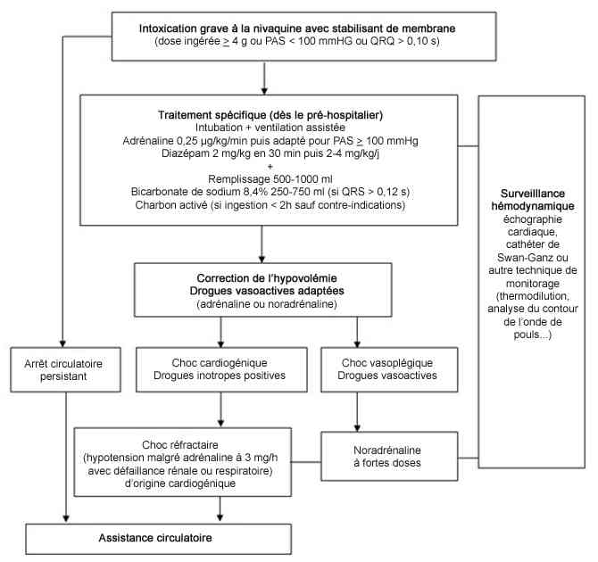

Bienvenue Sur Medical Education
Intoxication : chloroquine
Spécialité : pediatrie / toxicologie /
Points importants
-
Antipaludéen de synthèse (Nivaquine®)
-
Tableau initial souvent faussement rassurant car un arrêt cardiaque inopiné peut survenir de façon précoce. Le délai habituel de l'apparition des complications est de 30 min à 6 h; une aggravation plus tardive (jusqu'à 24 h) est possible
-
Effet stabilisant de membrane par blocage du courant sodique entrant (phase 0) et potassique sortant (phase 3) et réduction du calcium entrant donnant l'effet inotrope négatif
-
Intubation, adrénaline et diazépam dès le préhospitalier si intoxication grave et transfert vers un centre capable de réaliser une assistance circulatoire
Présentation clinique / CIMU
SIGNES FONCTIONNELS
Présentation clinique / CIMU
SIGNES FONCTIONNELS
Troubles digestifs
- Vomissements fréquents et précoces
- Peuvent diminuer la quantité de chloroquine réellement absorbée alors que tardifs, mais exposent au risque d'inhalation
- Sont probablement d'origine centrale
Troubles neurologiques
- Signes neurosensoriels : bourdonnement, hypoacousie, vertiges, flou visuel, diplopie
- Agitation anxieuse, obnubilation, coma, convulsions
Troubles cardio-circulatoires
- Lipothymie, palpitations, douleur thoracique, malaise
- Arrêt cardiaque
Troubles respiratoires
- Polypnée, dyspnée, détresse respiratoire
Troubles rénaux
- Oligurie, anurie
CONTEXTE
Terrain
- Intoxication volontaire : patient dépressif
- Surdosage : erreur de prescription ou d'administration
Traitement usuel
- Hydroxychloroquine pour certains rhumatismes ou maladies de système avec atteinte articulaire et cutanée
Antécédents
- Dépression
- Certains rhumatismes ou maladies de système avec atteinte articulaire et cutanée
Circonstances de survenue
- Tentative de suicide par ingestion le plus souvent
- Accident lors d'erreur de prescription ou d'administration
EXAMEN CLINIQUE
Délai : 30 min à 6h ; une aggravation plus tardive est possible
Signes cardiovasculaires
- HoTA, collapsus, choc
- Bradycardie
- Arythmie, arrêt cardiaque brutal
Signes neurologiques
- Agitation, anxiété, coma (bas débit cérébral > toxicité neurologique directe), convulsions
- Atteinte VIIIe paire crânienne (bourdonnement, hypoacousie, vertiges)
- Atteinte IIe paire crânienne (flou visuel, diplopie, anomalie champ visuel, cécité transitoire)
- Lors d'intoxications aiguës, ces troubles visuels et auditifs sont réversibles
Signes respiratoires
- Polypnée
EXAMENS PARACLINIQUES SIMPLES
ECG
- Aplatissement de l'onde T voire onde U, QT allongé
- QRS élargis > 0,12 s, aspect de bloc de branche droit, onde P aplatie, allongée voire absente, BAV du 1er degré
- Troubles du rythme : torsade de pointe, troubles du rythme ventriculaire (ESV, TV, FV)
- Autres anomalies: syndrome de Brugada électrique, tachycardie supraventriculaire ou bradycardie irrégulière à complexes QRS élargis souvent précédant l'asystole
Glycémie
Baisse de la SpO2
CIMU
- Tri 1 ou 2 en fonction de l'atteinte des fonctions vitales
Signes paracliniques
BIOLOGIQUE
-
Gazométrie :
-
acidose métabolique
-
hypoxémie sans hypercapnie (effet shunt)
-
Ionogramme sanguin et créatininémie :
-
insuffisance rénale aiguë
-
bicarbonates abaissés
-
hypokaliémie de transfert
-
Hyperlactatémie (si choc ou sepsis)
-
Ionogramme urinaire :
-
mécanisme de l'insuffisance rénale aiguë (par déshydratation ou nécrose tubulaire aiguë)
-
Bilan d'hémostase :
-
baisse du taux de prothrombine
-
baisse des facteurs de l'hémostase
-
CIVD
-
Bilan hépatique :
-
élévation des transaminases
-
stigmates d'insuffisance hépatique (foie de choc)
TOXICOLOGIQUE
-
Dosage de la chloroquine dans le sang total : 1 gr ingéré augmente la concentration d'environ + 5 µmol/L
AUTRES
- acidose métabolique
- hypoxémie sans hypercapnie (effet shunt)
- insuffisance rénale aiguë
- bicarbonates abaissés
- hypokaliémie de transfert
- mécanisme de l'insuffisance rénale aiguë (par déshydratation ou nécrose tubulaire aiguë)
- baisse du taux de prothrombine
- baisse des facteurs de l'hémostase
- CIVD
- élévation des transaminases
- stigmates d'insuffisance hépatique (foie de choc)
Radiographie pulmonaire
- Syndrome de détresse respiratoire aigu
- Hémorragie intra-alvéolaire
Monitorage de l'état hémodynamique
- Systématique en cas de choc
- Recours aux techniques habituelles de réanimation (échographie cardiaque, cathétérisme cardiaque droit, PICCO, Vigileo...)
- Choc hypovolémique dû aux vomissements
- Choc vasoplégique lié au blocage des canaux sodiques sur les cellules musculaires lisses des vaisseaux
- Choc cardiogénique lié à l'effet inotrope négatif induit par le blocage des canaux sodiques
FO et examen ophtalmologique
- La présence d'anomalies oculaires doit faire pratiquer un fond d'oeil à la recherche d'un spasme de l'artère centrale de la rétine, qui est cependant rarement retrouvé en comparaison avec l'intoxication aiguë à la quinine
FACTEURS PRONOSTIQUES
Trois paramètres permettent d'évaluer la gravité d'une intoxication à l'admission
- La dose supposée ingérée (= ou > 4 gr)
- La baisse de la PAS (= ou < 100 mmHg)
-
L'élargissement des QRS (= ou >100 ms)
-
intoxication grave :
- dose ingérée ≥ 4 g ou PAS < 100 mmHg ou durée QRS > 0,10 s
-
intoxication modérée :
- dose ingérée < 4 g et PAS ≥ 100 mmHg et durée QRS ≤ 0,10 s
-
intoxication grave :
- Une dose > ou = 5 g est constamment mortelle en l'absence de traitement
Hypokaliémie
- La kaliémie est proportionnelle à la PA, et inversement proportionnelle à la valeur du QT et à la durée des QRS
- Une valeur < 3mmol/L est prédictive d'une surmortalité
Relation étroite entre la concentration initiale mesurée sur le sang total et la gravité de l'intoxication
- Troubles cardiaques graves fréquents au-dessus de 12 µmol/L
- Sans traitement, le décès est constant au-dessus de 25 µmol/L
-
Avec prise en charge adaptée en réanimation, la mortalité est :
- nulle pour une chloroquinémie =12 µmol/L
- de 2% pour une chloroquinémie entre 12 et 25 µmol/L
- de 21% à partir de 25 µmol/L
- de 60% si > 50 µmol/L
D'autres facteurs sont prédictifs d'une mort différée de plus de 12 h par rapport à l'admission
- Apparition d'une oligurie
- Elévation de la créatinémie
- Persistance ou l'augmentation d'une hyperlactacidémie, en sachant que sa valeur initiale n'a pas de valeur pronostique
- Augmentation de la chloroquinémie de plus de 20% dans les 6 h qui suivent l'admission
Diagnostic étiologique
-
Diagnostic basé initialement sur l'anamnèse et le tableau clinique
-
Dosage dans le sang total (voire dans le plasma) de chloroquine pour confirmer le diagnostic (laboratoire spécialisé)
Diagnostic différentiel
Diagnostic différentiel
Autre trouble cardiaque d'origine non toxique
Autre intoxication par cardiotropes avec un effet stabilisant de membrane
-
Anti-arythmiques de la classe I de Vaughan Williams :
- quinidine, lidocaïne, phénytoïne, mexilétine, cibenzoline, tocaïnide, procaïnamide, disopyramide, flécaïnide, propafénone...
-
Bêtabloquants :
- propranolol, acébutolol, nadoxolol, pindolol, penbutolol, labétalol, métoprolol, oxprénolol
-
Antidépresseurs polycycliques :
- amitritptyline, imipramine, clomipramine, dosulépine, maprotiline
- Antiépileptique : carbamzépine
- Neuroleptiques : phénothiazines
- Antalgiques : dextropropoxyphène
- Antipaludéens : chloroquine, quinine
- Récréatifs : cocaïne
Traitement
-
Extrême brutalité de survenue d'un arrêt cardiaque au cours des intoxications aiguës par la chloroquine
-
Le pronostic de cette intoxication a été modifié par l'application, dès la phase préhospitalière, d'un protocole thérapeutique associant adrénaline, ventilation assistée et diazépam
TRAITEMENT PREHOSPITALIER/INTRAHOSPITALIER
Stabilisation initiale
-
Voie veineuse de bon calibre :
- remplissage modéré
- intubation et ventilation contrôlée
- adrénaline 0,25 µg/kg/min puis adapté pour obtenir PAS > 100 mmHg
- diazépam : 2 mg/kg en 30 min puis 2-4 mg/kg/j
- bicarbonates 8,4% 250 mL débit libre + 2 g de KCl si QRS = 0,12 s + HoTA ; objectif : réduire le bloc intra-ventriculaire ; critères d'efficacité sont la correction du QRS et de l'HoTA
- L'induction de l'anesthésie générale pour permettre l'intubation est basée sur les protocoles habituels de séquence rapide. Le diazépam, utilisé seul n'a pas fait la preuve de son action antidotique dans l'intoxication à la chloroquine : il n'est donc plus indiqué dans les formes dites jadis « intermédiaires »
Suivi du traitement
- Charbon activé si vu dans les 2 h, en l'absence de contre-indications
- Monitorage hémodynamique : La persistance d'un collapsus sous adrénaline impose de pratiquer une étude hémodynamique, qui montre le plus souvent une correction insuffisante de la baisse des résistances systémiques
- Traitement du choc (catécholamines adaptées au profil hémodynamique)
- Compensation des pertes hydro-électrolytiques
- Correction prudente de l'hypokaliémie car pool potassique conservé : 80-160 mEq/j (4-6 g/j) sans jamais dépasser le double même pour une kaliémie < 2 mmol/L, pour éviter un risque d'arythmie ventriculaire secondaire à l'hyperkaliémie au moment de la disparition de l'effet stabilisant de membrane
- Choc électrique externe si troubles du rythme ventriculaire grave ; si récidive, la plupart des anti-arythmiques est contre-indiquée
Assistance circulatoire
- Discuter assistance circulatoire si état de choc ou AC réfractaire
- Poser l'indication avant l'apparition d'une défaillance multiviscérale
- Les modalités et indications de l'assistance circulatoire doivent encore être précisées pour les intoxications par la chloroquine. L'assistance périphérique par pompe centrifuge à débit continu avec canulation chirurgicale fémorale est la meilleure solution. Elle doit être proposée chez tout patient intoxiqué et présentant un arrêt ou une défaillance cardiaque réfractaire aux thérapeutiques pharmacologiques. Il n'existe pas de seuil établi pour définir un choc réfractaire aux catécholamines. Nous avons suggéré que la présence d'une HoTA malgré une perfusion d'adrénaline > 3 mg/h en présence d'une insuffisance rénale ou d'une hypoxémie majeure, serait prédictive du décès sans traitement d'exception.
Surveillance
CLINIQUE
-
PA, FC, FR, diurèse, conscience/2 h
-
Scope systématiquement
-
Paramètres de ventilation mécanique
PARACLINIQUE
-
Ionogramme sanguin, créatininémie, urée sanguine, gazométrie, lactatémie
-
NFS, bilan d'hémostase (TP et facteur V), transaminases
-
Troponine, CPK
-
ECG
-
Radiographie de thorax
-
Dosage de la chloroquine dans le sang total ou le plasma (laboratoire spécialisé)
Devenir / orientation
-
Il s'agit d'une intoxication grave du sujet conscient avec un risque d'arrêt cardiaque inopiné
-
Il ne faut pas sous-estimer la gravité potentielle
-
Les patients sont généralement adressés systématiquement par les services préhospitaliers vers la réanimation
CRITERES D'ADMISSION
Devenir / orientation
- Il s'agit d'une intoxication grave du sujet conscient avec un risque d'arrêt cardiaque inopiné
- Il ne faut pas sous-estimer la gravité potentielle
- Les patients sont généralement adressés systématiquement par les services préhospitaliers vers la réanimation
CRITERES D'ADMISSION
En réanimation
- Admission systématique pour toute intoxication volontaire ou surdosage
Mécanisme / description
GENERALITES
-
L'intoxication par la chloroquine est rare mais potentiellement grave. L'hydroxychloroquine, 2-3 fois moins cardiotoxique, est responsable d'intoxications encore plus rares. La sévérité de ces intoxications est liée à l'effet stabilisant de membrane qui résulte du blocage des canaux sodiques des cellules contractiles et de conduction cardiaque
-
En France, la publication dans les années 80 du livre « Suicide mode d'emploi » avait popularisé l'intoxication à la chloroquine. Depuis cette date, les facteurs pronostiques ont été identifiés et la stratégie thérapeutique optimisée, basée sur l'intubation et la mise sous adrénaline préventivement dès l'identification d'une forme sévère avant la survenue de complications cardiaques
TOXICOCINETIQUE
-
La chloroquine est rapidement absorbée au niveau du duodénum et des premières anses de l'intestin grêle
-
Son excellente biodisponibilté (90%) explique l'obtention d'une concentration maximum entre 1 h et demie et 3 h après l'absorption. Toutefois, dans les intoxications massives, il n'est pas rare d'observer une ascension de la concentration plasmatique jusqu'à 10 h après l'absorption en moyenne.
-
La demi-vie d'élimination présente de grandes variations allant de 6 à 31 h, mais il existe une décroissance tri-exponentielle avec une demi-vie d'élimination tardive de 60 jours
-
La chloroquine absorbée se répartit dans le compartiment vasculaire puis est distribuée vers un compartiment tissulaire 1 000 fois plus grand
-
Aussi, dans l'intoxication par des doses massives, c'est la demi-vie initiale de distribution qui est importante car elle est responsable de la décroissance initiale rapide des concentrations plasmatiques
PHYSIOPATHOLOGIE
-
Effet stabilisant de membrane : Le support est un blocage des canaux sodiques et potassiques entraînant une diminution du flux sodique entrant dépolarisant en phase 0 et du flux potassique sortant repolarisant en phase 3. Ces perturbations sont à l'origine du ralentissement de la vitesse de propagation de l'influx et de l'allongement de la période réfractaire. En diminuant l'entrée de calcium voltage-dépendant en phase 2 du potentiel d'action, la chloroquine provoque un effet inotrope négatif. Le mécanisme est identique au niveau des cellules musculaires lisses vasculaires à l'origine d'une vasodilatation
-
Hypokaliémie : Elle est liée à un mécanisme de transfert. Elle peut être parfois profonde (valeur extrême rapportée à 0,8 mmol/L associée alors à une tétraparésie). La chloroquine peut bloquer la fermeture du canal potassique voltage-dépendant HERG (human ether-a-go-go related gene) des cardiomyocytes, provoquant un transfert intracellulaire de potassium. Le rôle délétère de l'hypokaliémie qui en résulte est discuté. Elle pourrait aggraver les effets proarythmogènes du blocage de la conduction ventriculaire, de l'augmentation d'automaticité et de l'allongement du QT. A l'inverse, elle pourrait être protectrice, en induisant une inhibition relative de la pompe Na-K-ATPase membranaire nécessaire pour restaurer un certain degré d'inotropisme et d'excitabilité myocardique. C'est pourquoi, en raison d'une pathogénie incertaine, la correction de l'hypokaliémie même profonde doit être prudente car difficile et exposant au risque d'arythmie ventriculaire lors du transfert extracellulaire, après élimination du toxique, de l'excès de potassium apporté
-
Les troubles neurologiques (agitation, anxiété, coma ou convulsions) sont généralement la conséquence du bas débit cérébral, même si une toxicité cérébrale directe est possible
-
L'hypoxémie : elle est secondaire dans les formes graves à un oedème pulmonaire lésionnel d'apparition retardée aboutissant à un syndrome de détresse respiratoire aigu (SDRA) par exsudation ou hémorragie intra-alvéolaire
-
L'acidose métabolique lactique : elle traduit l'hypoperfusion tissulaire
PHARMACOLOGIE
-
Diazépam :
-
observation initiale : études rétrospectives ayant constaté une diminution de la mortalité des intoxications par la chloroquine grâce au diazépam, mais ces résultats n'ont pas été retrouvés par la suite
-
probables effets protecteurs cardio-vasculaires dans les modèles expérimentaux, même si ne peut être considéré comme un antagoniste de la chloroquine au sens pharmacologique du terme :
-
chez le rat traité par diazépam, la mortalité de l'intoxication par chloroquine diminue
-
dans un modèle d'intoxication aiguë par la chloroquine chez le porc, le diazépam (2 mg/kg) améliore la PA et la FC, diminue l'élargissement du QRS et augmente la diurèse et l'élimination urinaire de la chloroquine
-
mais sur le myocarde de rat isolé, absence de régression des effets inotropes négatifs de la chloroquine
-
dans les intoxications de gravité moyenne, un essai contrôle contre placebo n'a pas permis de constater qu'il avait un effet bénéfique
-
plusieurs hypothèses pour le mécanisme d'action discuté :
-
effet anti-arythmique par l'intervention de récepteurs périphériques des benzodiazépines, notamment cardiaques
-
effet sur le muscle lisse vasculaire diminuant la vasodilatation induite par la chloroquine
-
interaction de type pharmacocinétique
-
effet sur le système nerveux central
-
Adrénaline :
-
permet de lutter contre les effets hémodynamiques délétères de la chloroquine, en corrigeant ses effets hémodynamiques mais aussi ECG, en particulier l'élargissement de l'espace QRS
-
le choix d'un agoniste adrénergique ne doit pas seulement prendre en compte l'effet bénéfique d'un bêta-agoniste sur le myocarde, car la chloroquine induit aussi une importante vasodilatation artérielle que seule une stimulation alpha-adrénergique permet de corriger
-
ses effets ne se limitent pas à une action hémodynamique mais comportent aussi des effets électrophysiologiques limitant les troubles du rythme par réentrée
-
Ventilation mécanique :
-
rôle essentiel car hypoxémie, voire syndrome de détresse respiratoire aiguë dans les intoxications sévères
-
nécessite une intubation trachéale et une anesthésie. Il est dangereux d'attendre du diazépam de remplir le rôle d'agent anesthésique. Initialement, le thiopental avait été proposé, car c'était le seul agent anesthésique alors disponible dans les ambulances de réanimation et il n'entraînait pas d'effets indésirables à condition d'être administré après l'adrénaline. Aujourd'hui, la crash-induction habituelle est recommandée
Algorithme
-
Algorithme : intoxication à la chloroquine
- observation initiale : études rétrospectives ayant constaté une diminution de la mortalité des intoxications par la chloroquine grâce au diazépam, mais ces résultats n'ont pas été retrouvés par la suite
-
probables effets protecteurs cardio-vasculaires dans les modèles expérimentaux, même si ne peut être considéré comme un antagoniste de la chloroquine au sens pharmacologique du terme :
- chez le rat traité par diazépam, la mortalité de l'intoxication par chloroquine diminue
- dans un modèle d'intoxication aiguë par la chloroquine chez le porc, le diazépam (2 mg/kg) améliore la PA et la FC, diminue l'élargissement du QRS et augmente la diurèse et l'élimination urinaire de la chloroquine
- mais sur le myocarde de rat isolé, absence de régression des effets inotropes négatifs de la chloroquine
- dans les intoxications de gravité moyenne, un essai contrôle contre placebo n'a pas permis de constater qu'il avait un effet bénéfique
-
plusieurs hypothèses pour le mécanisme d'action discuté :
- effet anti-arythmique par l'intervention de récepteurs périphériques des benzodiazépines, notamment cardiaques
- effet sur le muscle lisse vasculaire diminuant la vasodilatation induite par la chloroquine
- interaction de type pharmacocinétique
- effet sur le système nerveux central
- permet de lutter contre les effets hémodynamiques délétères de la chloroquine, en corrigeant ses effets hémodynamiques mais aussi ECG, en particulier l'élargissement de l'espace QRS
- le choix d'un agoniste adrénergique ne doit pas seulement prendre en compte l'effet bénéfique d'un bêta-agoniste sur le myocarde, car la chloroquine induit aussi une importante vasodilatation artérielle que seule une stimulation alpha-adrénergique permet de corriger
- ses effets ne se limitent pas à une action hémodynamique mais comportent aussi des effets électrophysiologiques limitant les troubles du rythme par réentrée
- rôle essentiel car hypoxémie, voire syndrome de détresse respiratoire aiguë dans les intoxications sévères
- nécessite une intubation trachéale et une anesthésie. Il est dangereux d'attendre du diazépam de remplir le rôle d'agent anesthésique. Initialement, le thiopental avait été proposé, car c'était le seul agent anesthésique alors disponible dans les ambulances de réanimation et il n'entraînait pas d'effets indésirables à condition d'être administré après l'adrénaline. Aujourd'hui, la crash-induction habituelle est recommandée
Algorithme
- Algorithme : intoxication à la chloroquine
 _804 Algorithme Algorithme : intoxication à la chloroquine
Bibliographie
-
Clemessy JL, Taboulet P, Hoffman JR, Hantson P, Barriot P, Bismuth C, Baud FJ. Treatment of acute chloroquine poisoning: a 5-year experience. Crit Care Med 1996;24:1189-95
-
Riou B, Barriot P, Rimailho A, Baud FJ. Treatment of severe chloroquine poisoning. N Engl J Med 1988;318:1-6
-
Mégarbane B, Donetti L, Blanc T, Chéron G, Jacobs F. Intoxications graves par médicaments et substances illicites en réanimation. Réanimation 2006; 15: 332-342
-
Mégarbane B, Bloch V, Hirt D, Debray M, Résière D, Deye N, Baud FJ. Blood concentrations are better predictors of chloroquine poisoning severity than plasma concentrations : a prospective study with modeling of the concentration/effect relationships. Clin Toxicol 2010
Auteur(s) : Bruno MEGARBANE